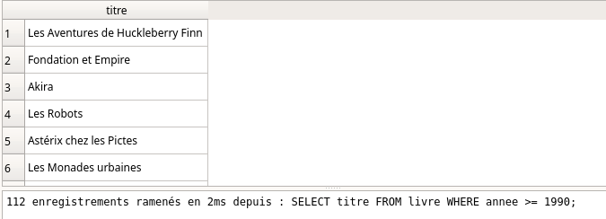
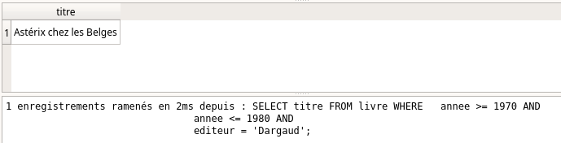
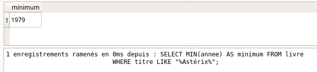
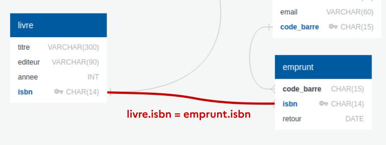

Langage SQL⚓︎

0. Du modèle relationnel au SGBD⚓︎
Les considérations sur le modèle relationnel traitaient plutôt de la structure mathématique des données.
Il s'agissait de déterminer la meilleure structure pour représenter les données et les relations qui les lient.
Il convient maintenant d'aborder la partie logicielle : les SGBD (Systèmes de Gestion de Bases de Données).
Les SGBD jouent le rôle d'interface entre l'être humain et la base de données. Par l'intermédiaire de requêtes, l'utilisateur va consulter ou modifier la base de données. Le SGBD est garant de l'intégrité de cette base, et prévient notamment que les modifications (souvent appelées transactions) ne soient pas préjudiciables à la base de données.
Le langage utilisé pour communiquer avec le SGBD est le langage SQL, pour Structured Query Langage (pour langage de requêtes structurées).
Les SGBD les plus utilisés sont basés sur le modèle relationnel. Parmi eux, citons Oracle, MySQL, Microsoft SQL Server, PostgreSQL, Microsoft Access, SQLite, MariaDB...
Mais de plus en plus de SGBD non-relationnels sont utilisés, spécialement adaptés à des données plus diverses et moins structurées. On les retrouve sous l'appelation NoSQL (pour Not only SQL). Citons parmi eux MongoDB, Cassandra (Facebook), BigTable (Google)...
1. Introduction au langage SQL⚓︎
Dans toute la suite, nous allons travailler avec la base de données livres.db.
1.0 Différents moyens d'interroger la base de données⚓︎
Pré-requis : téléchargez la base de données livres.db.
1. En ligne avec sqliteonline.com
- Rendez vous sur https://sqliteonline.com/
- Par File / OpenDB, ouvrez le fichier
livres.dbprécédemment téléchargé. - Écrivez votre requête plus cliquez sur Run.
2. Directement sur ce site
- Rendez vous sur la page SQL en ligne
- Écrivez la requête dans le champ prévu pour votre base.
Dans toute la suite, les manipulations sont à faire en interrogeant la base de données livres.db, avec l'une des méthodes indiquées ci-dessus.
Voici le diagramme relationnel de cette base :

- les clés primaires sont en bleu (suivi d'une icone de clé)
- les clés étrangères sont en noir et reliées à leur clé primaire.
1.1. Sélection de données⚓︎
1.1.0 Exemple 0⚓︎
Requête basique : SELECT, FROM 
- Commande :
SELECT titre FROM livre ; - Traduction :
On veut tous les titres de la table «livre».
- Résultat :
Remarques
-
Les mots-clés SQL sont traditionnellement écrits en MAJUSCULES.
-
Le
;signale la fin de l'instruction. Il peut donc être omis s'il n'y a pas d'instructions enchaînées (ce qui sera toujours notre cas). -
L'indentation n'est pas syntaxique (pas comme en Python). On peut faire des retours à la ligne et des indentations pour rendre le code plus lisible.
1.1.1 Exemple 1⚓︎
Requête filtrée : SELECT, FROM, WHERE
- Commande :
SELECT titre FROM livre WHERE annee >= 1990; - Traduction :
On veut les titres de la table «livre» qui sont parus après (ou en ) 1990;
- Résultat :

Le mot-clé WHERE doit être suivi d'un booléen. Les opérateurs classiques = , !=, >, >=, <, <= peuvent être utilisés, mais aussi le mot-clé IN :
1.1.1bis Exemple 1bis⚓︎
Requête avec plusieurs possibilités : WHERE ... IN...
- Commande :
SELECT titre FROM livre WHERE annee IN (1990, 1991, 1992); - Traduction :
On veut les titres de la table «livre» qui sont parus en 1990, 1991 ou 1992.
- Résultat :
1.1.2 Exemple 2⚓︎
Requête avec booléens : AND - OR
- Commande :
SELECT titre FROM livre WHERE annee >= 1970 AND annee <= 1980 AND editeur = 'Dargaud'; - Traduction :
On veut les titres de la table «livre» qui sont parus entre 1970 et 1980 chez l'éditeur Dargaud;
- Résultat :

1.1.3 Exemple 3⚓︎
Requête approchée : LIKE
- Commande :
SELECT titre FROM livre WHERE titre LIKE '%Astérix%'; - Traduction :
On veut les titres de la table «livre» dont le titre contient la chaîne de caractères "Astérix".
Le symbole % est un joker qui peut symboliser n'importe quelle chaîne de caractères.
- Résultat :

1.1.4 Exemple 4⚓︎
Plusieurs colonnes
- Commande :
SELECT titre, isbn FROM livre WHERE annee >= 1990; - Traduction :
On veut les titres et les ISBN de la table «livre» qui sont parus après 1990.
- Résultat :

1.1.5 Exemple 5⚓︎
Toutes les colonnes : *
- Commande :
SELECT * FROM livre WHERE annee >= 1990; - Traduction :
On veut toutes les colonnes disponibles de la table «livre» pour les livres qui sont parus après 1990.
L'astérisque * est un joker (wildcard en anglais).
- Résultat :
1.1.6 Exemple 6⚓︎
Renommer les colonnes : AS
- Commande :
SELECT titre AS titre_du_livre FROM livre WHERE annee >= 1990; - Traduction :
Lors de l'affichage du résulats et dans la suite de la requête (important), la colonne "titre" est renommée "titre_du_livre".
- Résultat :

Remarque
L'alias AS sera souvent utilisé pour raccourcir un nom, notamment lors des jointures de plusieurs tables (voir plus loin).
1.2. Opérations sur les données : sélection avec agrégation (non exigible)⚓︎
Les requêtes effectuées jusqu'ici ont juste sélectionné des données grâce à différents filtres : aucune action à partir de ces données n'a été effectuée.
Nous allons maintenant effectuer des opérations à partir des données sélectionnées. On appelle ces opérations des opérations d'agrégation.
1.2.1 Exemple 7⚓︎
Compter : COUNT
- Commande :
SELECT COUNT(*) AS total FROM livre WHERE titre LIKE "%Astérix%"; - Traduction :
On veut compter le nombre d'enregistrements de la tables livres comportant le mot "Astérix". Le résultat sera le seul élément d'une colonne nommée «total».
- Résultat :

1.2.2 Exemple 8⚓︎
Additionner : SUM
- Commande :
SELECT SUM(annee) AS somme FROM livre WHERE titre LIKE "%Astérix%"; - Traduction :
On veut additionner les années des livres de la tables livres comportant le mot "Astérix". Le résultat sera le seul élément d'une colonne nommée «somme». Attention : dans notre cas précis, ce calcul n'a aucun sens...
- Résultat :

1.2.3 Exemple 9⚓︎
Faire une moyenne : AVG
- Commande :
SELECT AVG(annee) AS moyenne FROM livre WHERE titre LIKE "%Astérix%"; - Traduction :
On veut calculer la moyenne des années de parution des livres de la table livres comportant le mot "Astérix". Le résultat sera le seul élément d'une colonne nommée «moyenne».
Attention : là encore, ce calcul n'a aucun sens...
- Résultat :

1.2.4 Exemple 10⚓︎
Trouver les extremums : MIN, MAX
- Commande :
SELECT MIN(annee) AS minimum FROM livre WHERE titre LIKE "%Astérix%"; - Traduction :
On veut trouver la plus petite valeur de la colonne «annee» parmi les livres de la tables livre comportant le mot "Astérix". Le résultat sera le seul élément d'une colonne nommée minimum. Le fonctionnement est identique avec MAX pour la recherche du maximum.
- Résultat :

1.2.5 Exemple 11⚓︎
Classer des valeurs : ORDER BY, ASC, DESC, LIMIT
-
Commande :
SELECT titre, annee FROM livre WHERE titre LIKE "%Astérix%" ORDER BY annee DESC; -
Traduction :
On veut afficher tous les albums d'Astérix, et leur année de parution, classés par année décroissante.
- Résultat :

-
Comportement par défaut : Si le paramètre ASC ou DESC est omis, le classement se fait par ordre croissant (donc ASC est le paramètre par défaut).
-
Utilisation de LIMIT : Le mot-clé LIMIT (suivi d'un nombre) permet de limiter le nombre de résultats affichés.
Ainsi la requête
permet d'obtenir les renseignements sur l'Astérix le plus récent.SELECT titre, annee FROM livre WHERE titre LIKE "%Astérix%" ORDER BY annee DESC LIMIT 1;
1.2.5 Exemple 12⚓︎
Suppression des doublons : DISTINCT
- Commande :
SELECT DISTINCT editeur FROM livre; - Traduction :
On veut la liste de tous les éditeurs. Sans le mot-clé DISTINCT, beaucoup de doublons apparaîtraient.
- Résultat :

1.3 Des recherches croisées sur les tables : les jointures⚓︎
Observons le contenu de la table «emprunt» :
SELECT * FROM emprunt;

Le contenu est peu lisible : qui a emprunté quel livre ?
Souvenons-nous du diagramme de la base de données.
Pour que la table «emprunt» soit lisible, il faudrait (dans un premier temps) que l'on affiche à la place de l'ISBN le titre de l'ouvrage. Or ce titre est disponible dans la table «livres». On va donc procéder à une jointure de ces deux tables.
1.3.1 Exemple 13⚓︎
Jointure de 2 tables : INNER JOIN
- Commande :
SELECT livre.titre, emprunt.code_barre, emprunt.retour FROM emprunt INNER JOIN livre ON emprunt.isbn = livre.isbn; - Traduction : Comme plusieurs tables sont appelées, nous préfixons chaque colonne avec le nom de la table. Nous demandons ici l'affichage de la table «emprunt», mais où on aura remplacé l'ISBN (peu lisible) par le titre du livre.
Remarque : On peut aussi utiliser simplement JOIN à la place d'INNER JOIN.
L'expression
INNER JOIN livre ON emprunt.isbn = livre.isbn
Il est donc très important de spécifier ce sur quoi les deux tables vont se retrouver (ici, l'ISBN)

- Résultat :

1.3.2 Exemple 14⚓︎
Le résultat précédent a permis d'améliorer la visibilité de la table «emprunt», mais il reste la colonne «code_barre» qui est peu lisible. Nous pouvons la remplacer par le titre du livre, en faisant une nouvelle jointure, en invitant maintenant les deux tables «livre» et «usager».
Jointure de 3 tables : INNER JOIN
- Commande :
SELECT u.nom, u.prenom, l.titre, e.retour FROM emprunt AS e INNER JOIN livre AS l ON e.isbn = l.isbn INNER JOIN usager AS u ON e.code_barre = u.code_barre; -
Traduction : Il faut bien comprendre que la table principale qui nous intéresse ici est «emprunts», mais qu'on modifie les valeurs affichées en allant chercher des correspondances dans deux autres tables. Notez ici que des alias sont donnés aux tables (par AS) afin de faciliter l'écriture.
-
Résultat :
2. Création et modification d'une base de données⚓︎
L'objectif est de créer la table suivante :
| id | Nom | Maths | Anglais | Histoire |
|---|---|---|---|---|
| 1 | Alice | 16 | 11 | 17 |
| 2 | Bob | 12 | 15 | 10 |
| 3 | Charles | 9 | 11 | 18 |
Pour cela vous pouvez travailler sur cette page.
2.1 Exemple 15⚓︎
Création d'une table : CREATE TABLE
- Commande :
CREATE TABLE table_notes ( Id INTEGER PRIMARY KEY, Nom TEXT, Maths INTEGER, Anglais INTEGER, Histoire INTEGER ); -
Remarque :
C'est l'utilisateur qui spécifie, éventuellement, quel attribut sera une clé primaire. -
Résultat :
2.2 Exemple 16⚓︎
Insertion de valeurs : INSERT INTO, VALUES
-
Commande :
INSERT INTO table_notes VALUES (1, 'Alice', 16, 11, 17), (2, 'Bob', 12, 15, 10), (3, 'Charles', 9, 11, 18); -
Résultat :
2.3 Exemple 17 : Intérêt de la clé primaire⚓︎
Essayons d'insérer un 4ème enregistrement ayant le même id qu'un autre élève.
-
Commande :
INSERT INTO table_notes VALUES (3, 'Denis', 18, 10, 12); -
Résultat :
La contrainte de relation est violée : le SGBD «protège» la base de données en n'acceptant pas la proposition d'insertion. La base de données n'est pas modifiée.
-
Remarque : Il est possible de «déléguer» la gestion des valeurs de la clé primaire avec l'instruction
AUTOINCREMENT. La déclaration de la table et l'insertion des valeurs serait :et le résultat serait :CREATE TABLE table_notes ( Id INTEGER PRIMARY KEY AUTOINCREMENT, Nom TEXT, Maths INTEGER, Anglais INTEGER, Histoire INTEGER ); INSERT INTO Table_notes (Nom, Maths, Anglais, NSI) VALUES ('Alice', 16, 11, 17), ('Bob', 12, 15, 10), ('Charles', 9, 11, 18);

L'attribut id est donc géré automatiquement par le SGBD.
2.4 Exemple 18⚓︎
Modification d'une valeur UPDATE, SET
Pour modifier la note de Maths d'Alice :
- Commande :
UPDATE Table_notes SET Maths = 18 WHERE Nom = 'Alice';
2.5 Exemple 19⚓︎
Suppression d'un enregistrement : DELETE
Pour supprimer totalement la ligne concernant Charles :
- Commande :
DELETE FROM Table_notes WHERE Nom = 'Charles';
Si une autre table contient par exemple l'attribut id comme clé étrangère, et si l'id de Charles fait partie de cette table, le SGBD refusera de supprimer cette ligne, afin de ne pas violer la contrainte de référence.
2.6 Exemple 20⚓︎
Suppression totale d'une table : DROP TABLE
Pour supprimer totalement et défitivement la table :
- Commande :
DROP TABLE Table_notes;
Là encore, si une autre table est reliée à Table_notes par une clé étrangère, la suppression sera bloquée par le SGBD.